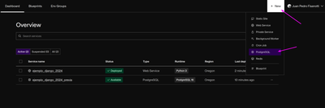

How to deploy a Django app in Render.com (free tier)
How to deploy a Django app in Render.com (free tier)
This is a basic tutorial on how to deploy a Django app to Render.com, focused on using only the free tier features and automating things as much as possible. This also doesn't cover how to do a Django app, it assumes you already have a working app that you just need to deploy.
Assumptions
You have a working Django app (for instance, you can already run it locally with
python manage.py runserverand everything works fine).You're using Django 4 or newer (tested up to Django 4.2.4), and your project structure is what Django does by default.
Your Django project is in a Github or Gitlab repository.
There's a single Django project in the repo, not multiple projects at once, and you don't have.
You want to use Postgres as your production database in Render.
0: Render.com account
Just go to Render.com, create a user (if you don't already have one), activate your account, and sign in to the Dashboard.
1: Defining dependencies
Create a requirements.txt file in the root of your repository, and add these dependencies in it:
django==4.2.4 dj-database-url==2.0.0 psycopg2-binary==2.9.7 whitenoise[brotli]==6.5.0 gunicorn==21.2.0
If you already have a requirements.txt, just add the new packages to it.
2: Creating deploy scripts
You will need two scripts: one that builds the web app server (installs dependencies, updates the database structure, etc), and another one that runs your web app. Render will use these two scripts when you want to deploy your web app.
Create a build.sh file in the root of your repository, with these contents:
# exit on error set -o errexit pip install -r ./requirements.txt cd $(dirname $(find . | grep manage.py$)) python manage.py collectstatic --no-input python manage.py migrate python manage.py createsuperuser --username admin --email "YOUR@EMAIL.com" --noinput || true
In that script, replace YOUR@EMAIL.com with your real email.
Then create a run.sh file in the root of your repository, with these contents:
# exit on error set -o errexit cd $(dirname $(find . | grep manage.py$)) gunicorn $(dirname $(find . | grep wsgi.py$) | sed "s/\.\///g").wsgi:application
If you have a less standard project or repo structure, you can replace the dark magic in those scripts: the cd command just needs to get inside your Django project folder, and the gunicorn command needs to look something like gunicorn your_project_name.wsgi:application.
But for normal project structures, the dark magic should work just fine :)
3. Django settings for Render
Now you need to add this to the end of your settings.py file:
# code needed to deploy in Render.com: import os import dj_database_url if 'RENDER' in os.environ: print("USING RENDER.COM SETTINGS!") DEBUG = False ALLOWED_HOSTS = [os.environ.get('RENDER_EXTERNAL_HOSTNAME')] DATABASES = {'default': dj_database_url.config(conn_max_age=600)} MIDDLEWARE.insert(MIDDLEWARE.index('django.middleware.security.SecurityMiddleware') + 1, 'whitenoise.middleware.WhiteNoiseMiddleware') STATIC_ROOT = os.path.join(BASE_DIR, 'staticfiles') STATICFILES_STORAGE = 'whitenoise.storage.CompressedManifestStaticFilesStorage'
This code basically overrides some of the settings of your project, so it can work well with what we are using inside Render.com: the database, the static files backend, etc. But it only does that when it detects your project is running inside Render, otherwise it does nothing to your settings.
You can further customize this if you have other settings that should have different values when running in Render.com.
Just remember to never put secret stuff in there, because this will be committed to your repo.
If you need to read any secret keys or values, you can use os.environ.get('MY_SECRET_THING_XYZ') and then define the value for that environment variable in the Render dashboard.
4. Commit everything
Commit all your new files and modified files, and push the changes to your Github/Gitlab repo!
5. Creating your Postgres database
Go to Render's dashboard and create a new Postgres database using this menu:
{kind=link}
You will need to specify the database name and a few other fields. After you created your database, open its details page from the dashboard and copy the value from this field, to use it in the next step:

6. Deploying your app at Render
Go again to Render's dashboard and create a new "Web service" using this menu:

In the first page you will need to either fill the url of a public Github or Gitlab repository, or login with your Github/Gitlab account to choose a private repository. After you have specified your repo, in the next page you will need to fill out a few fields:

Name: important, this will be part of the url of your deployed web app, so use something meaningful.
Root Directory: important to leave this empty, so all the code is ran from the root directory.
Runtime: must be Python.
Build command: here you will use your build script:
bash build.shStart command: and here you will use your run script:
bash run.sh
Scroll down, and click "Create Web Service".
This will automatically attempt a first deploy, that will fail because we are missing a last step :). Go to the "Environment" section of your web app inside Render:

And add three environment variables (it's important that the names are UPPERCASE):
DATABASE_URL: here you need to paste the database url that you copied at step 5. You can go to the database details to copy it again if needed.DJANGO_SUPERUSER_PASSWORD: here set a password that you want to use for your Django superuser.PYTHON_VERSION: set it to3.11.0(or newer?).
Now you can re-attempt the deploy, just hit this menu and everything should work!:

After the deploy finishes, your website should be ready at https://YOUR_RENDER_WEB_SERVICE_NAME.onrender.com/
What's next?
Anytime you need to deploy a new version, you just push it to your repo, and you can use the manual deploy menu to re-deploy. You can even configure your Render app to use a different branch from your repository, so you can deploy from a "stable" branch instead.
The rest of Render's UI is pretty straightforward, explore it! There are plenty of useful things even in the free tier, including logs, usage metrics, etc.
The free tier doesn't include the web shell to access your running app directly, but you can still connect to it via ssh using the "Connect" button to the side of the ""Manual Deploy" one.
Comments
Comments powered by Disqus